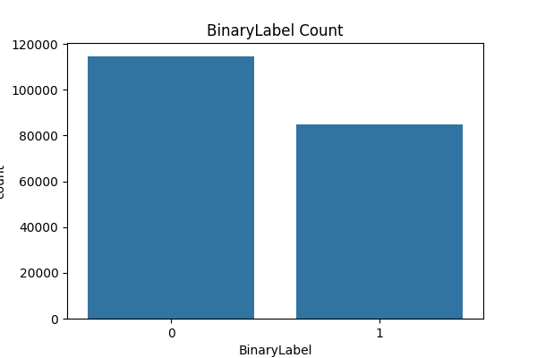
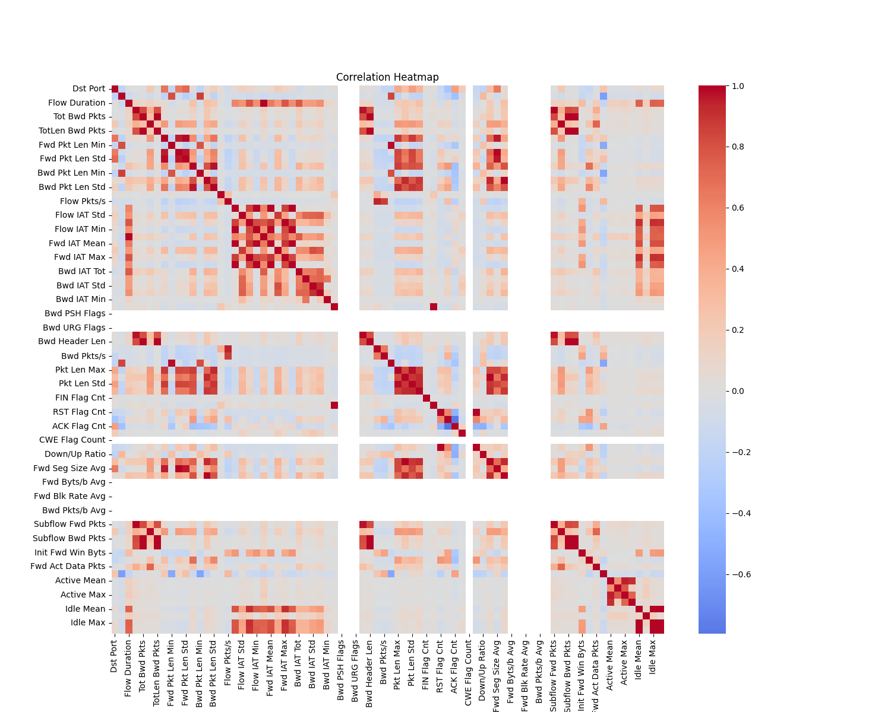
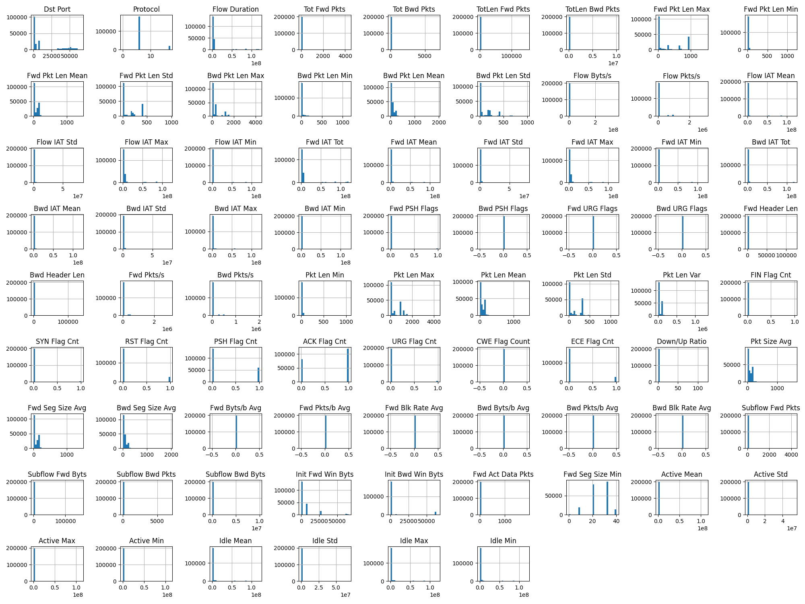
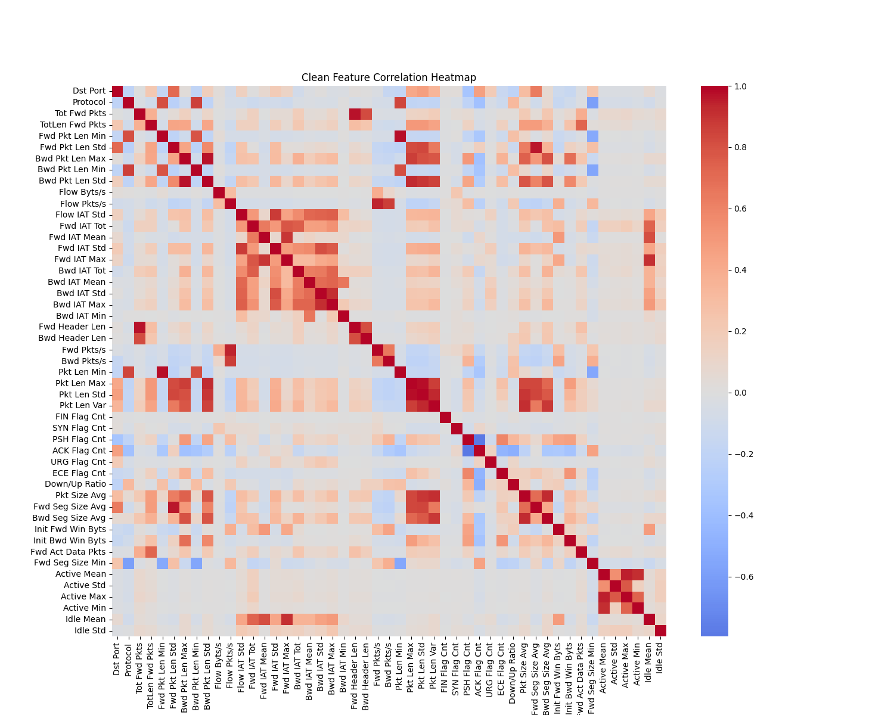
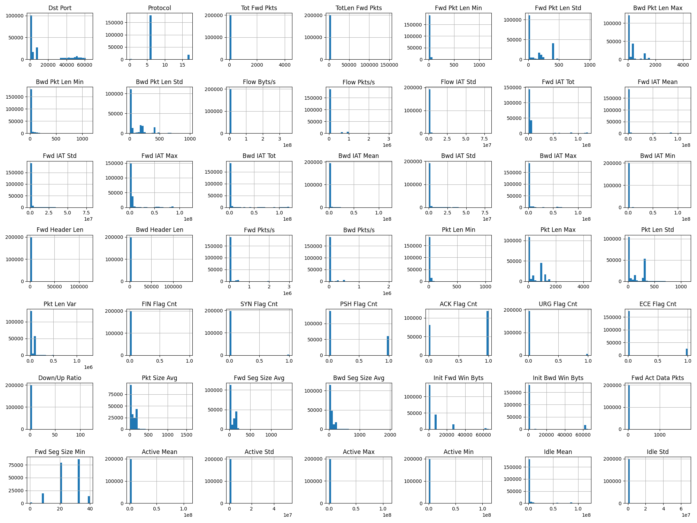
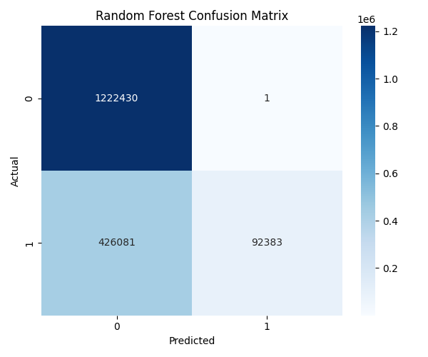
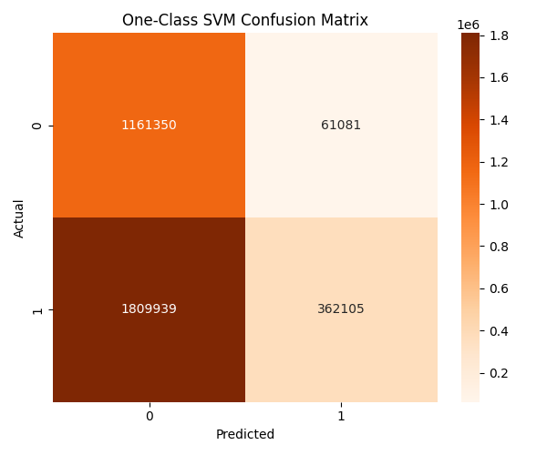

Traditional intrusion detection relies on known attack signatures. When a new, never-before-seen threat appears — a zero-day attack — these systems go silent.
NSL-KDD is the most-used benchmark in intrusion detection research. But it's from 1999 — it misses modern attacks, modern traffic patterns, and modern network topologies. We needed something current.
| Criteria | NSL-KDD (1999) | CIC-IDS-2018 ✓ |
|---|---|---|
| Attack Types | 4 generic categories | 14+ realistic attack families |
| Traffic Realism | Simulated lab traffic | Real-world profiled flows |
| Scale | ~125K records | 8.2M+ flow records |
| Modern Attacks | No DDoS, no botnets | DDoS, Botnets, Brute-Force, Web Attacks |
| Community Consensus | Outdated benchmark | Gold standard for ML-based IDS |
From static firewalls to continuous monitoring. Early systems were built for enterprise LANs — modern CPS spans cloud, IoT, and industrial control.
Supervised models like Random Forest achieve near-perfect accuracy on known attacks. But "known" is the key word — they memorize, not generalize.
One-Class SVMs and autoencoders frame detection as boundary estimation. They don't need attack labels — just a model of what "normal" looks like.
Most papers evaluate on random train/test splits — leaking future attack knowledge into training. When models face true zero-day threats, recall collapses.
A dual-model framework that explicitly tests for zero-day scenarios: supervised classification for known threats, anomaly detection for novel ones.
8.2 million network flows — 74% benign, 26% attacks across 14 categories. Here's what the data looks like before any engineering.





Cyber defense is an open-world problem. One model can't do it all. We chose two complementary approaches — one for known threats, one for the unknown.
| TRAINING | Benign + DoS-Hulk |
| TESTING (seen) | Held-out Benign + DoS-Hulk |
| TESTING (zero-day) | Bot SlowHTTPTest |
random_state=42
| TRAINING | Benign only 20K samples |
| TESTING | Held-out Benign + ALL attacks |
Random Forest dominates known attacks. One-Class SVM catches what it can't. Neither alone is sufficient — together, they form an adaptive defense.

